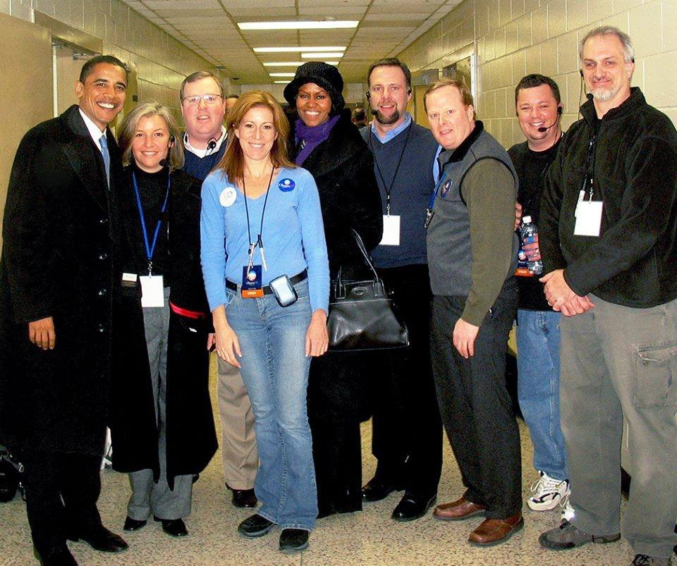
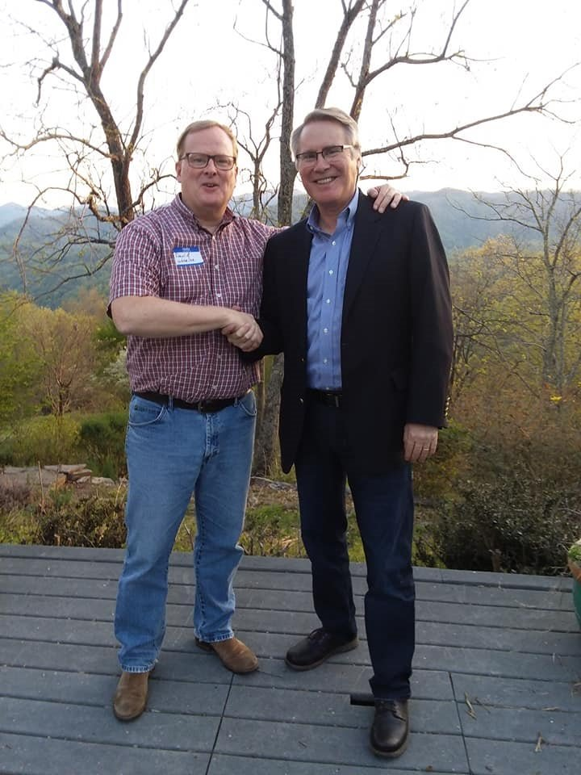
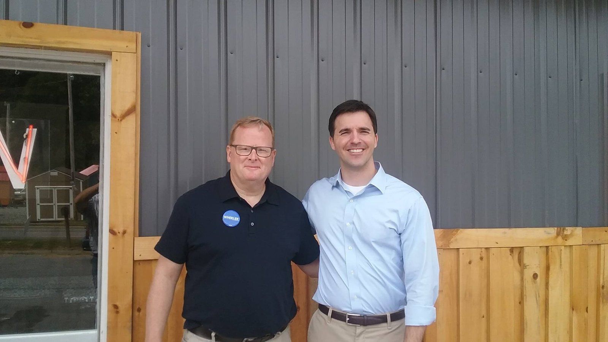
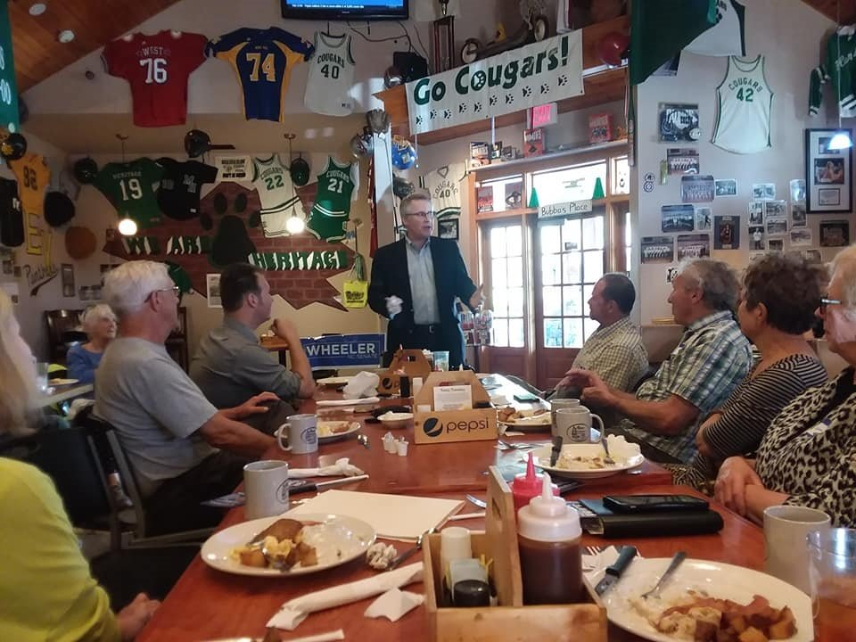
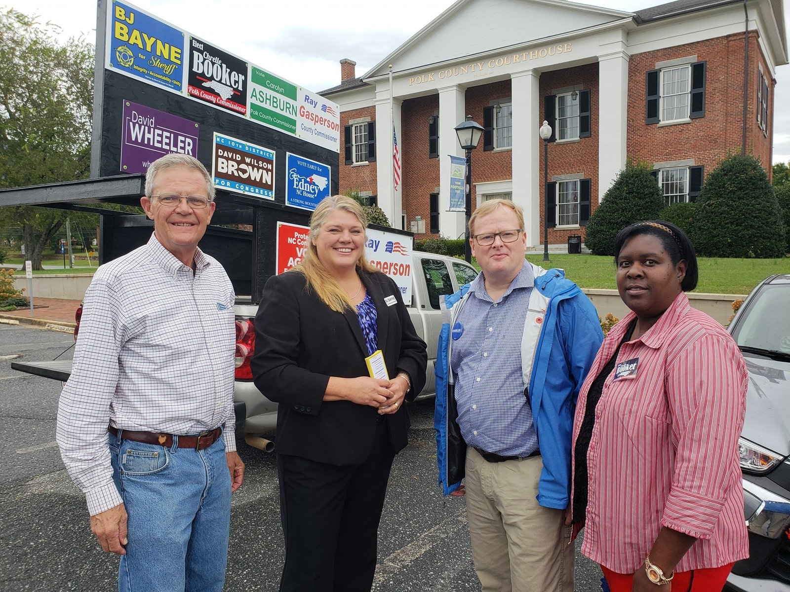

Five-time founder. Accountability journalist. Producer of 2,500+ events in 75+ countries on all seven continents. Forty-five years in American politics, from dropping Jimmy Carter leaflets in Warren County, Iowa, in 1976 to running one of the most aggressive accountability operations in the country today.
Entrepreneurial executive with 35+ years of global experience founding, scaling, and leading organizations across politics, technology, media, marketing, and live events. Proven ability to win business, drive revenue, and deliver impact for Fortune 100 companies, governments, nonprofits, and political campaigns. Built and led organizations on all seven continents, managing teams of 5 to 120+ across 75+ countries and producing 2,500+ large scale events and campaigns with measurable results. Known for getting things done under pressure, creating disruptive strategies, and rallying stakeholders behind high stakes missions. Trusted by presidents, policymakers, CEOs, and media leaders to deliver transformative outcomes.
Since 2025, operating as a one-person product studio: directing AI coding agents daily to build, ship, and run a portfolio of political data, media, and publishing products. The section below is what that looks like in practice.
What I Am Building Now
Every product below was designed, built, deployed, and is operated by me, with AI agents doing the engineering under my direction. No dev shop, no staff, no venture money. Specs in the morning, production by the afternoon.
Accountability journalism and political action, 2021 to present
The PAC that helped end Madison Cawthorn's congressional career in 2022 and has kept sustained national pressure on Lauren Boebert since. Runs a full fundraising stack I built from scratch: a 239,000-contact database, email and SMS pipelines, an 11-tier membership program, donation processing at a 2.75% fee instead of ActBlue's roughly 6%, and failure-only alerting so the machine runs itself.
Independent accountability reporting on Boebert, Chuck Edwards, FEC complaints, and the grifter class. Includes a court-ordered live broadcast pipeline for courtroom coverage (the first of its kind secured by a PAC-affiliated newsroom), an automated "Grifters" docket, and a Rogues' Gallery of accountability targets with a daily Putin Watch Index.
Built on 86.9 million FEC records covering every federal race from 2000 to 2026. Programmatic race pages for the 2026 cycle, incumbent audits, a donor match and propensity engine, and a published analysis putting structural waste in small-dollar giving at $666 million. Architected to institutional-grade security standards from day one.
A two-speed forecast model with a correlated error structure (national, regional, and race level), backtested across six election cycles. Fed by a licensed CivicScience data stream of more than one million daily inputs. Licensing conversations underway with prediction-market platforms. Currently running a public survey of ten large language models on their 2026 midterm calls, to be scored against results on November 3.
A fake federal agency that renames landmarks every day and posts the results across Bluesky and the major platforms automatically. Rename generator, Trump Atlas, share certificates, a Printful merch store, and a satirical filing-fee schedule that routes donations to the PAC. Bill Murray approved the seal.
A clean, no-data-harvesting voter information site (register, check registration, vote by mail) routing to official sources. Built as a counterweight to a billionaire-funded site with a confusingly similar name.
A 126-page political coloring book on Lauren Boebert, with a cover blurb from James Carville. Published on Amazon. A book-length Boebert investigation is in progress.
Co-hosted with the former chief prosecutor at Guantanamo Bay. Companion "Rogues' Gallery" video series is produced end to end by an automated pipeline.
Fire Rounds Fund and candidate campaigns
Targeted independent expenditure programs
Rapid-deployment fundraising and radio-ad campaigns for races that need them: South Dakota (Brian Bengs vs. Mike Rounds), rural Florida radio against Byron Donalds, and North Carolina radio on Michael Whatley. Landing page to warm-donor send in under a week.
Political Highlights
Tom Vilsack, 2020.
Forty-five years, starting at age 11 with a stack of Jimmy Carter leaflets in Warren County, Iowa.
1976First campaign work, leafleting for Jimmy Carter in Warren County, Iowa, then door-knocking at about age 10 to help retire a four-term Republican state representative.
Early 1980sPage in the Iowa House of Representatives in Des Moines.
1983 to 1987University of Iowa, B.A. in Political Science and Economics. Restarted the Iowa Young Democrats from a dormant organization into a working statewide operation.
1986Intern in the office of U.S. Senator Tom Harkin, Washington, D.C. First met Joe Biden the same year.
1987 to 1989Elected to the Young Democrats of America National Committee.
1988Iowa caucus campaign, Michael Dukakis for President.
1992Iowa caucus campaign, Paul Tsongas for President.
1990s to 2000sProduced five televised presidential health policy forums and raised $2.8 million in sponsorships to do it. Managed more than a dozen head of state visits to the United States.
1998 to 2007Tom Vilsack: Iowa governor campaigns and his 2006 to 2007 presidential run. Vilsack on Wheeler: "Anyone that knows David Wheeler, like I do, knows he's tough as nails."
February 2007Led advance for Barack Obama's first Iowa swing as a presidential candidate (Cedar Rapids, Waterloo, Iowa Falls, Ames) when Obama was still running fourth or fifth in Iowa polling. See the story below.
August 2007Produced the LIVESTRONG Presidential Cancer Forum in Cedar Rapids with Lance Armstrong and Chris Matthews, broadcast on MSNBC, ten presidential candidates, 20 million television impressions.
2010 to 2012Appointed by the U.S. Secretary of Commerce and the U.S. Trade Representative to the Industry Trade Advisory Committee on Services and Finance.
2020Democratic nominee for North Carolina State Senate, District 47.
2021 to presentCo-founder and President, American Muckrakers PAC. Cawthorn out in 2022. Boebert defamation suit settled in 2026 after a federal magistrate judge found she defamed Wheeler five times.
Stories
A few of the ones I get asked about.
The first marathon on Antarctica (1995)
On January 28, 1995, about a hundred runners from the deck of a converted Russian research ship ran 26.2 miles across King George Island in the South Shetlands, past the Russian Bellingshausen station and the Uruguayan and Chilean bases, through mud, glacial melt, and wind that pushed sideways. It was billed as "The Last Marathon," the first ever held on the continent, and it gave birth to the Seven Continents Club. I was 29 and ran production for the event through Protocol International alongside Thom Gilligan of Marathon Tours and Travel. Everything that could go wrong at the bottom of the world did, and the race finished anyway. It still runs today.
Moscow, just after the wall came down
In the early 1990s, with the Soviet Union freshly gone and nobody certain who was in charge of anything, Protocol International produced an edition of the Moscow Marathon from Red Square. There was no playbook for a Western-style professional sporting event in post-Soviet Russia: permits were handshakes, sponsors paid in things other than rubles, and the course had to be walked the night before to make sure it still existed. It was one of the first professionally produced sporting events in the new Russia, and the experience of running operations in a country with no functioning rulebook became the template for everything I did afterward in 75 other countries.
London and the marathon circuit
Protocol International opened offices in London and France and produced hospitality and sponsor programs around the London Marathon and the major-city marathon circuit, along with corporate events in London for clients including Clarion Events. That same era included IndyCar hospitality for Motorola in 15 cities for 18,000 guests, and a dozen head of state visits to the United States, including the President and Premier of China under contract with the Chinese Embassy.
Obama in fifth place

Backstage with Barack and Michelle Obama. Wheeler is third from left.
In the summer of 2006 the Des Moines Register's Iowa Poll had John Edwards at 30, Hillary Clinton at 26, John Kerry at 12, and Tom Vilsack at 10. Barack Obama was not on the list. By the time he announced in Springfield on February 10, 2007, he was running fourth or fifth in Iowa behind Clinton, Edwards, Vilsack, and Kerry. I led advance for his first Iowa swing as a candidate: a town hall at Kennedy High School in Cedar Rapids that afternoon, a meet-and-greet in the Central Middle School gym in Waterloo that night, breakfast at a farmhouse in Iowa Falls the next morning, then Ames. The Ames rally had been booked into a theater at the Memorial Union. We gave out 2,700 tickets by Thursday noon and moved it to Hilton Coliseum. Eleven months later he won the caucuses.
Lowering the Mississippi
For a national civic event on the riverfront in Burlington, Iowa, the stage and seating plan only worked if the river was about a foot lower than it was going to be. So I negotiated with the U.S. Army Corps of Engineers to temporarily lower the Mississippi. They did. I have used that line in a lot of meetings since, and it has never once failed to land.
Driving Jeannie
When Barbara Eden came to Des Moines for an ABC television production in my senior year at Norwalk High School, I was her driver. I was 17, the car was not mine, and I got Barbara Eden everywhere on time. It was my first lesson in the two rules of advance work: the principal never waits, and the principal never knows what it took.
The cake in Dubai
Years later, producing a program in Dubai where Glenn Close was a featured guest, I had a cake built large enough to hold a grown man, and the man inside it was her husband, David Shaw, who had flown in without her knowing. He popped out. She screamed. The room lost its mind. Event production is mostly logistics, but every so often it is theater, and you only get one take.
Asheville, with Andie MacDowell
After moving to the North Carolina mountains in 2010, I collaborated with Andie MacDowell, a longtime Asheville resident and honorary chair of the Asheville Film Festival, on a project in Asheville. Small city, big talent, and one of the reasons I stayed.
The USC Board of Trustees in Asia
At Ambassadors LLC, the publicly traded travel and events firm founded by Peter Ueberroth that I was brought in to turn around (annual sales went from $25 million to $75 million in two years), I directed the University of Southern California Board of Trustees' overseas meetings in China, Korea, and India. The 2006 China trip, through Shanghai, Beijing, and Hong Kong, was where USC President Steven Sample announced the USC U.S.-China Institute. Moving a university's board and its spouses across three countries with full security and protocol is the most demanding kind of event there is, and the only kind I ever really wanted to do.
Journalist since 16
My first byline was at the North Warren Town and Country News in Norwalk, Iowa, at 16. Forty-five years later, the job description is the same: find out what the powerful would rather you did not know and print it. The tools changed. The job did not.
Professional Experience
American Muckrakers PAC & American Muckrakers, Inc.
President and Co-Founder2021 to Present
Founded a nonprofit and political action committee focused on accountability for elected officials.
Raised millions through small dollar and major donor campaigns on infrastructure built in house.
Spearheaded digital campaigns generating tens of millions of impressions and national and international media coverage.
Research and reporting contributed to the defeat of Rep. Madison Cawthorn and produced accountability reporting on Rep. Lauren Boebert that drew sustained national coverage.
Built partnerships with journalists, activists, and advocacy organizations to amplify reach and impact.
Parallax Advisory LLC
President2024 to Present
Strategic advisory and product studio spanning political data, forecasting, media, and publishing ventures (VoteROI, Datum Signals, Muckrakers.Today, Department of Renaming), with technical execution delivered through AI directed development.
Muckrakers LLC
Founder and President2024 to Present
AI enabled political intelligence platform monetizing real time polling data through an exclusive CivicScience partnership covering 1M+ inputs daily.
Global Higher Education Group LLC
Chief Executive Officer and Founding ShareholderTo 2021
International student scholarship and university matchmaking platform with partners in Canada, the United Kingdom, and Australia.
Conference IQ LLC
Co-Founder and President
Built the world's largest directory of business events and professional speakers.
Embark LLC
President2007 to 2021
Founded and scaled an international marketing and events company to 25+ staff and 75+ global clients.
Clients included Monsanto, AstraZeneca, GSK, Allergan, Motorola, Clarion Events (London), the Aspen Institute, ATIC (Abu Dhabi), and the U.S. federal government.
Produced the LIVESTRONG Presidential Cancer Forum on MSNBC with 10 presidential candidates and 20 million television impressions.
Developed thought leadership and innovation programs for 500+ global semiconductor leaders in the UAE.
Managed 250+ speaker logistics for Chicago Ideas Week, creating seamless global operations.
Led advance for Barack Obama's February 2007 Iowa campaign announcement swing.
Negotiated with the U.S. Army Corps of Engineers to temporarily lower the Mississippi River for a national civic event in Burlington, Iowa.
Ambassadors LLC
Senior Vice President2005 to 2007
Brought in to turn around a struggling publicly traded event and travel firm founded by Peter Ueberroth.
Increased annual sales from $25M to $75M in two years.
Expanded the international client base and streamlined finance and operations for scalability.
Directed USC Board of Trustees global meetings in China, Korea, and India.
Protocol International, Inc.
Founder and President1989 to 2005
Founded a global event management company at age 24 and grew it to 55 staff across the United States, the United Kingdom, and France.
Produced 1,200+ major corporate, nonprofit, and political events worldwide.
Created and raised $2.8M in sponsorships for 5 televised U.S. presidential health policy forums.
Managed more than a dozen head of state visits to the United States, including China's President and Premier under contract with the Chinese Embassy.
Produced an edition of the Moscow Marathon shortly after the fall of the Soviet Union, among the first professionally produced sporting events in the new Russia.
Ran production for the inaugural 1995 Antarctica Marathon, the first marathon ever held on the continent.
Produced hospitality and sponsor programs around the London Marathon and the major-city marathon circuit.
Managed IndyCar hospitality for Motorola across 15 cities for 18,000+ participants.
Political Consultant and Campaign Operator
Independent1987 to Present
Four decades of campaign design, message architecture, and insurgent strategy for political and corporate clients, from Iowa caucus campaigns (Dukakis, Tsongas, Vilsack, Obama) through statewide and federal races.
Photos
With the Young Democrats of Western North Carolina during the NC Senate campaign. Wheeler restarted the Iowa Young Democrats as a student in the 1980s and sat on the YDA National Committee.

With David Wilhelm, Bill Clinton's 1992 campaign manager and former DNC Chairman, in the North Carolina mountains.

With Jeff Jackson, then a North Carolina state senator, now Attorney General of North Carolina.With Phillip Price, 2018 Democratic nominee for Congress in NC-11, and Michelle Price.

David Wilhelm stumping at a Wheeler for NC Senate breakfast.

With the 2020 Democratic ticket at the Polk County Courthouse.Lake Lure, North Carolina, Chimney Rock in the background.
In the Press
Profiled and quoted in The Washington Post, The New York Times, Rolling Stone, Politico, The Guardian, and major broadcast networks. A selection of live links, newest first within each group.
AI-directed software development and data products
Investigative and accountability journalism
Business development and sponsorship sales
Strategic communications and media relations
Fundraising, investor and donor relations
Global event production and logistics
Compliance, risk and crisis management
Board and stakeholder engagement
Election forecasting and polling analytics
Boards, Appointments & Affiliations
Appointed by the U.S. Secretary of Commerce and the U.S. Trade Representative to the Industry Trade Advisory Committee on Services and Finance (2010 to 2012).
Founding member, Chicago-Galway Sister Cities Committee, appointed by Chicago Mayor Richard M. Daley (1990).
Chairman, Health-e Schools. Former Vice Chair, Spruce Pine Montessori Board of Directors.
Member, Yancey/Mitchell NAACP. Elected to the Young Democrats of America National Committee (1987 to 1989). U.S. Senate intern (Sen. Tom Harkin) and Iowa House of Representatives Page.
Co-Founder, American Muckrakers. Former advisor to the Livestrong Foundation and Lance Armstrong.
Education
University of Iowa
Bachelor of Arts, Political Science and Economics1987